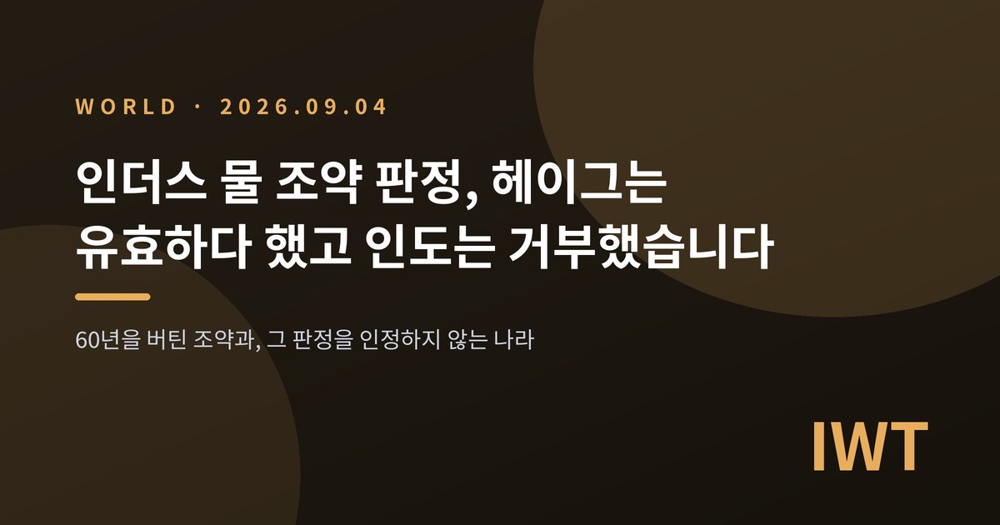
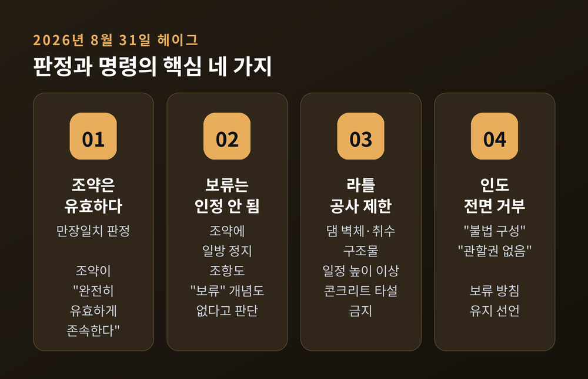
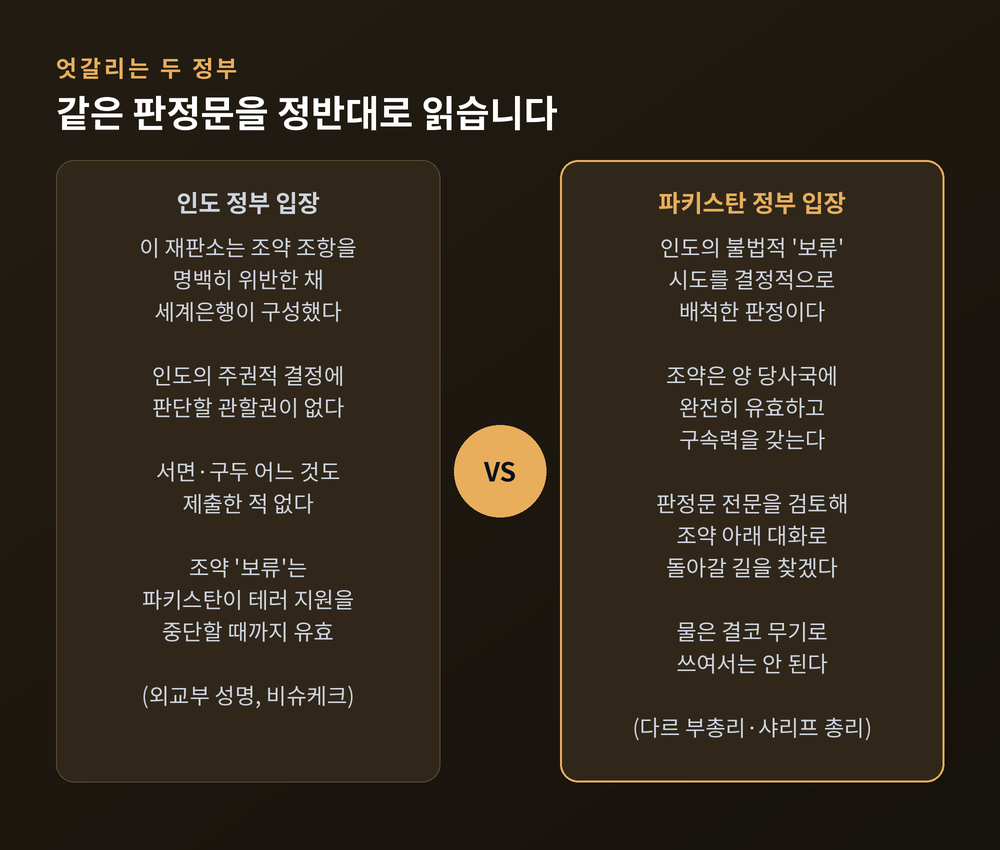
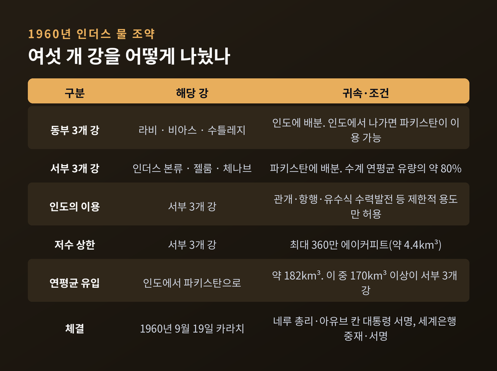
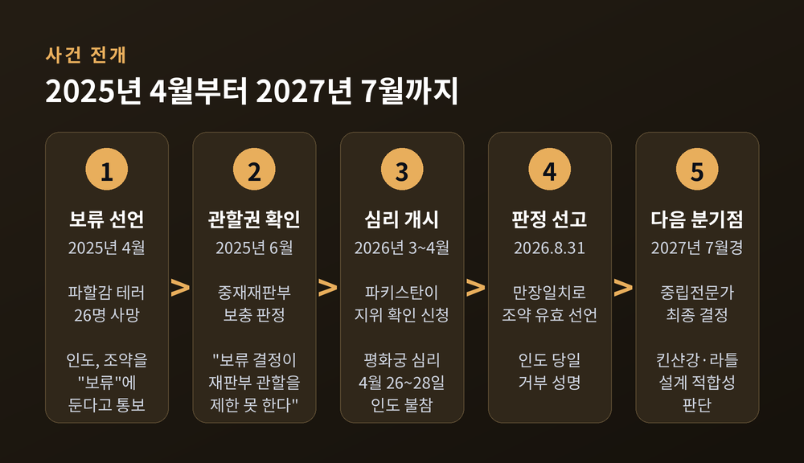
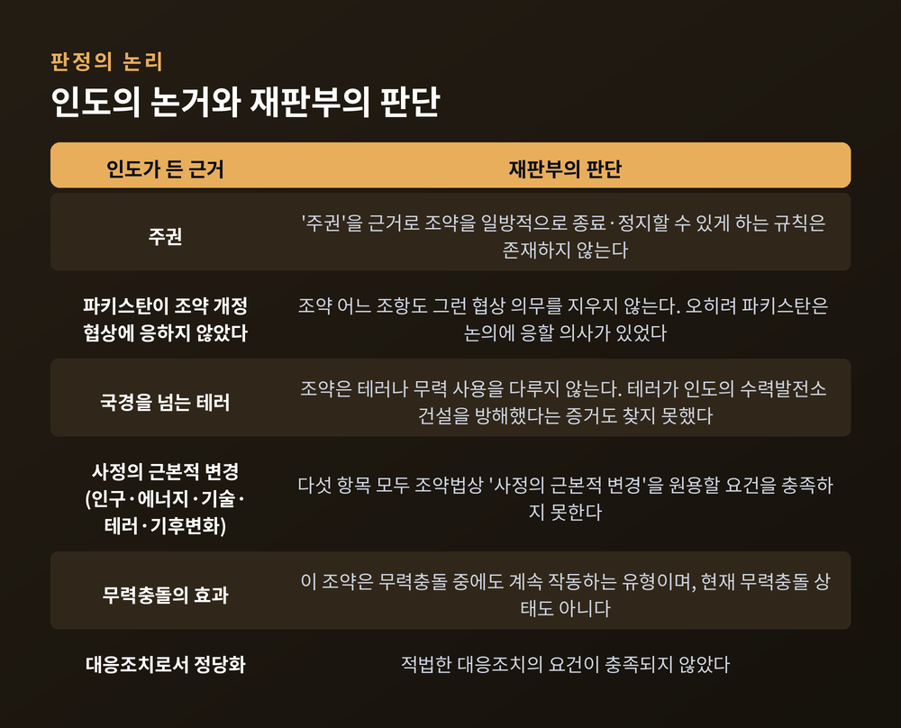
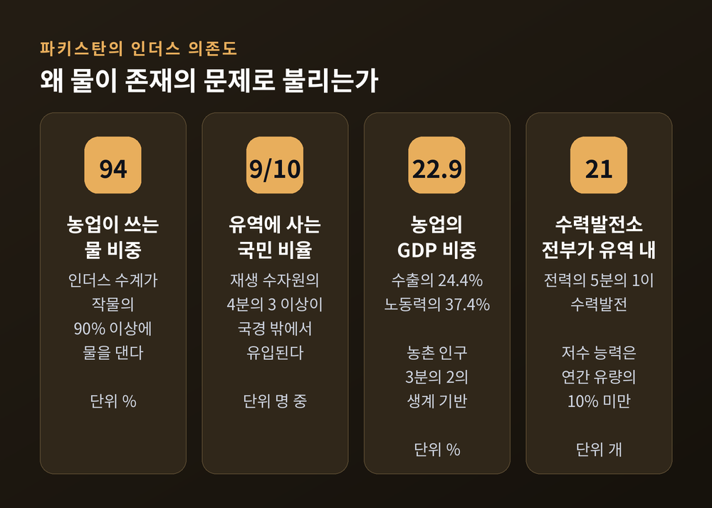

이번 글에서는 2026년 8월 31일 헤이그에서 나온 인더스 물 조약 판정을 정리해 보겠습니다. 핵심만 먼저 세 줄로 적습니다.
날짜는 2026년 8월 31일 월요일입니다. 장소는 네덜란드 헤이그의 평화궁이고, 주체는 상설중재재판소 산하 중재재판부입니다.
이날 재판부는 두 가지를 동시에 내놨습니다. 하나는 인더스 물 조약의 현재 지위에 관한 판정(Award)입니다. 다른 하나는 인도 라틀 수력발전소에 관한 잠정조치 명령입니다.
판정문의 문장은 짧고 분명합니다. 조약은 "완전히 유효하게 존속하며", 인도는 "서부 강 수력발전 사업의 설계와 운영에 관한 것을 포함해 조약상 의무를 준수해야 한다"는 것입니다.
재판부는 5인으로 구성됐습니다. 재판장은 미국의 션 D. 머피 교수이고, 벨기에의 바우터르 바위타르트 교수, 미국의 제프리 P. 미니어 교수, 요르단의 아운 샤우카트 알카사우네 판사, 호주의 도널드 블랙모어 박사가 함께했습니다. 결정은 만장일치였습니다.
잠정조치 쪽은 더 구체적입니다. 재판부는 인도가 라틀 댐 벽체와 취수 구조물을 일정 높이 이상으로 콘크리트 타설하는 것을 금지했습니다. 유효기간은 세계은행이 임명한 중립전문가의 최종 결정이 나온 뒤 90일까지입니다. 그 결정은 2027년 7월쯤으로 예상됩니다. 공사 일정을 보고할 의무도 함께 부과됐습니다. 파키스탄이 요청한 나머지 두 가지 조치는 기각됐습니다.
국제 재판기구가 인도의 '보류' 결정이 법적으로 유효한지를 정면으로 판단한 것은 이번이 처음입니다.

인도 외교부의 반응은 빨랐습니다. 판정 당일, 상하이협력기구 정상회의가 열리던 비슈케크에서 성명이 나왔습니다.
인도 측 표현은 이렇습니다. "이 이른바 재판소는 조약 조항을 명백히 위반한 채 세계은행이 구성한 것이며, 인도는 그 이른바 판정을 단호히 거부한다." 외교부는 재판소가 "인도의 주권적 결정에 대해 판단할 어떠한 관할권도 없다"고도 했습니다. 대변인 란디르 자이스왈은 재판소의 판단이 인도의 물 이용 권리에 아무런 영향을 주지 않는다는 취지로 밝혔습니다.
인도는 이 절차에 서면으로도 구두로도 참여한 적이 없다는 점을 강조합니다. 실제로 2026년 5월 중재재판부가 내린 '최대 저수량' 판정도 "무효"라며 받아들이지 않았습니다.
파키스탄 쪽 반응은 정반대였습니다. 이샤크 다르 부총리 겸 외무장관은 X에 이렇게 적었습니다. "이 판정은 인더스 물 조약을 '보류'에 두려 한 인도의 불법적 시도를 결정적으로 배척하고, 조약이 양 당사국에 완전히 유효하고 구속력을 갖는다는 점을 재확인했다."
파키스탄 정부는 판정문 전문이 공개되면 세부 내용을 검토해, 이것이 "양국이 조약 아래 다시 대화로 돌아가는 길"을 찾는 데 어떻게 쓰일 수 있을지 살피겠다고 밝혔습니다. 셰바즈 샤리프 총리는 다음 날 비슈케크에서 물은 "생명의 토대"이며 무기나 압박 수단으로 쓰여서는 안 된다고 말했습니다.
같은 문서를 두고 한쪽은 "법적 승리"라 부르고, 다른 한쪽은 "존재하지 않는 재판소의 종잇조각"이라 부르는 셈입니다.

배경을 조금 거슬러 올라가겠습니다.
인더스 물 조약은 1960년 9월 19일 파키스탄 카라치에서 체결됐습니다. 인도 총리 자와할랄 네루와 파키스탄 대통령 모하마드 아유브 칸이 서명했고, 세계은행이 중재자이자 서명 당사자로 참여했습니다. 협상에 걸린 시간은 9년입니다.
1947년 분할 독립은 국경만 그은 것이 아니었습니다. 인더스 수계의 여섯 개 주요 지류와, 영국이 관개용으로 만들어 둔 운하망을 함께 갈라놨습니다. 상류에 놓인 인도는 자국 영토를 흐르는 강을 개발할 주권을 주장했고, 하류의 파키스탄은 물이 끊길 것을 두려워했습니다. 그 긴장을 봉합한 것이 이 조약입니다.
조약의 방식은 공유가 아니라 분할이었습니다. 그래서 협력 협정이라기보다 '이혼 합의서'에 가깝다는 평가를 받습니다.
동부 3개 강인 라비·비아스·수틀레지는 인도에 갔습니다. 서부 3개 강인 인더스 본류·젤룸·체나브는 파키스탄에 갔습니다. 서부 3개 강은 인더스 수계 연평균 유량의 약 80%를 차지합니다. 인도에서 파키스탄으로 흘러가는 물은 연평균 약 182km³이고, 그중 170km³ 이상이 이 세 강에서 나옵니다.
인도는 서부 강에서 관개나 유수식 수력발전 같은 제한적 용도만 쓸 수 있습니다. 저수 용량도 최대 360만 에이커피트, 약 4.4km³로 묶여 있습니다.
이 조약은 1965년과 1971년의 전면전, 1999년 카르길 분쟁을 모두 견뎌냈습니다. 60년 넘게 작동한 국제조약이라는 평가가 과장이 아니었던 이유입니다.

전환점은 2025년 4월 22일입니다. 인도령 카슈미르의 관광지 파할감에서 무장괴한이 관광객에게 총격을 가해 26명이 숨졌습니다.
인도는 파키스탄을 배후로 지목했습니다. 파키스탄은 부인했습니다. 그리고 인도는 인더스 물 조약을 '보류(in abeyance)'에 둔다고 통보했습니다. 조건은 파키스탄이 국경을 넘는 테러 지원을 "믿을 수 있게, 되돌릴 수 없게" 포기할 때까지입니다.
파키스탄은 자국 물 몫을 정지시키려는 시도를 "전쟁 행위"로 간주한다고 답했고, 조약에는 일방적 정지 조항이 없다고 주장했습니다. 한 달 뒤인 2025년 5월에는 두 나라 사이에 단기 군사 충돌이 벌어졌습니다.
사실 인도가 조약 정지를 검토한 것은 처음이 아닙니다. 2001년 의회 습격 때도, 2016년 카슈미르 공격 때도 검토됐습니다. 2016년에는 모디 총리가 "물과 피는 함께 흐를 수 없다"고 말하기도 했습니다.
예전에는 말로 끝났습니다. 2025년에는 실행됐습니다. 이 차이가 이번 사안 전체의 무게를 결정합니다.
이후 절차는 이렇게 흘렀습니다. 2025년 6월 중재재판부는 "인도의 보류 결정이 재판부의 관할을 제한할 수 없다"는 보충 판정을 냈습니다. 2026년 3월 4일 파키스탄이 조약의 현재 지위 확인을 신청했습니다. 4월 26일부터 28일까지 평화궁에서 심리가 열렸지만, 인도는 참여 여부를 묻는 초청에 응답하지 않았고 출석하지 않았습니다. 심리는 파키스탄만 참여한 채 진행됐습니다.

인도가 불참했으므로, 재판부는 절차 바깥에서 확인 가능한 인도의 입장을 모았습니다. 인도 정부가 파키스탄과 중립전문가에게 보낸 문서, 인도 관리들의 공개 발언 같은 것입니다.
그리고 조약 밖 관습국제법에서 조약을 일방적으로 정지·종료할 수 있는 근거를 세 가지로 좁혔습니다. 상대방의 중대한 위반, 사정의 근본적 변경, 무력충돌의 효과입니다.
재판부가 특히 힘을 준 대목은 조약 자체의 구조입니다. 인더스 물 조약에는 일방 당사국이 조약을 종료하거나 정지하는 규정도, '보류'라는 개념도 없습니다. 조약은 인도와 파키스탄이 함께 후속 조약을 채택해야만 수정되거나 종료된다고 정하고 있습니다.

수치를 보면 파키스탄 정부가 왜 이 사안을 국가 생존의 문제로 다루는지 이해가 됩니다.
미국 CSIS의 2025년 분석에 따르면, 파키스탄이 연간 쓸 수 있는 재생 수자원의 4분의 3 이상이 국경 밖에서 들어옵니다. 거의 전부가 인더스 수계입니다. 파키스탄인 10명 중 9명이 인더스 유역에 삽니다. 카라치와 라호르 같은 대도시의 식수도 이 강과 그 강이 채우는 지하 대수층에 기댑니다.
농업 쪽은 더 노골적입니다. 파키스탄 물 취수의 94%가 농업으로 갑니다. 농업은 GDP의 22.9%, 수출의 24.4%, 노동력의 37.4%를 차지합니다. 인더스 수계가 파키스탄 작물의 90% 이상에 물을 댑니다. 전력의 5분의 1이 수력발전이고, 21개 수력발전소가 전부 인더스 유역에 있습니다.
그런데 파키스탄의 저수 능력은 약합니다. 인더스 유역 저수지를 전부 합쳐도 연간 유량의 10%가 채 되지 않습니다. 물이 조금만 흔들려도 완충할 여유가 없다는 뜻입니다.

여기서는 신중해야 합니다. 자료들의 결론이 파키스탄 정치권의 언어와 반드시 일치하지는 않기 때문입니다.
CSIS의 분석은 단기적으로는 불가능하다고 봅니다. 이유가 역설적입니다. 조약이 애초에 인도의 저수·전용 인프라를 엄격히 묶어 뒀기 때문에, 인도에는 지금 물을 막을 시설 자체가 없습니다. 서부 강에 허용된 것은 대부분 큰 저수지 없는 유수식 발전소입니다. 건설 중인 사업이 다 끝나도 하류 유량 조절 능력은 제한적으로만 늘고, 완공 시점도 2032년 이후로 밀려 있습니다. 인도의 대규모 하천연결사업 30개 가운데 인더스 수계를 포함한 것은 하나도 없습니다.
파키스탄 수문학자 하산 아바스도 비슷한 취지로 말했습니다. "지금 당장 실존적 위협이 있다고 보지 않습니다. 서부 강들은 조약이 아니라 지리가 보호합니다." 그는 인도의 체나브강 저수 용량이 약 100만 에이커피트로 파키스탄의 계절 관개 수요에 비하면 작다고 지적하면서, 유수식 발전소는 "댐이 차면 물을 흘려보낼 수밖에 없다"고 설명했습니다. 그는 파키스탄이 대형 댐에만 매달리느라 관개 효율 개선이라는 더 싼 해법을 놓치고 있다고 자국 정책도 비판했습니다.
반대로 파키스탄 정치권과 군은 이를 실존적 위협으로 규정합니다. 셰바즈 샤리프 총리는 2026년 8월 13일 "파키스탄 물 한 방울 한 방울이 우리의 레드라인"이라고 말했습니다.
둘 다 기록해 두는 편이 정확하다고 생각합니다. 물리적 차단 능력과 정치적 위협 인식은 별개의 층위이기 때문입니다.
다만 CSIS가 지목한 한 가지는 지금 당장 작동합니다. 정보입니다. 조약은 사업 개발, 하천 유량, 수문 조건에 관한 상당량의 데이터 공유를 요구합니다. 조약이 멈추면 홍수 경보를 포함한 이 정보 흐름도 멈춥니다. 파키스탄은 인도가 2023년 이후 유량 데이터 공유를 중단하고 현장 점검도 막고 있다고 주장합니다. 양국 관리들이 함께 운영해 온 상설인더스위원회는 2022년 5월 이후 열리지 않았습니다.
이 판정의 가장 큰 한계는 명확합니다. 집행 수단이 없습니다. 파키스탄 측 법률 전문가들조차 유엔 안전보장이사회 명령에 비할 만한 강제 장치가 없다는 점을 인정합니다.
그럼에도 무게가 있다는 견해가 있습니다. 파키스탄 전 과도내각 법무장관 아메르 빌랄 수피는 "이것은 단순한 선언적 판단이 아니다. 파키스탄이 원하는 때에 국제법상 대응조치를 검토할 수 있는 매우 명확한 법적 근거를 준다"고 했습니다. 라호르경영대 국제법 교수 시칸데르 아흐메드 샤는 "인도의 불참은 아무 차이를 만들지 않는다. 재판부가 관할권을 확립했고 인도는 조약에 서명했다"고 평가했습니다.
반대편의 논리도 단순합니다. 인도가 재판부 구성 자체의 적법성을 부정하는 이상, 판정은 인도의 행동을 바꾸지 못한다는 것입니다. 인도 외교부는 재판소의 판단이 지금이든 앞으로든 인도가 진행 중인 사업에 아무런 효력이 없다는 입장입니다.
여기에는 조금 더 복잡한 사정도 있습니다. 인도는 상설중재재판소의 공식 회원국이며, 다른 사건에서는 그 권한을 수용해 왔습니다. 이번 거부는 재판 제도 전반에 대한 거부가 아니라, 세계은행이 이 특정 재판부를 구성한 방식이 조약에 어긋난다는 주장에 근거하고 있습니다.
서부 3개 강은 인도와 파키스탄이 각각 영유권을 주장하는 잠무·카슈미르를 통과합니다. 두 나라가 세 차례 전쟁을 치른 그 땅입니다. 물 문제가 영토·안보 문제와 구조적으로 얽혀 있다는 뜻입니다.
파장은 두 나라에서 끝나지 않습니다. CSIS는 인도가 확립된 물 조약에서 이탈할 의사를 보인 것이 다카와 카트만두에도 경고음을 울릴 수 있다고 봅니다. 인도는 방글라데시·네팔과도 물 문제로 껄끄러운 관계를 겪어 왔습니다.
그리고 인도 자신이 하류국인 무대가 있습니다. 인도는 수틀레지강과 인더스 본류, 브라마푸트라강에서 중국의 하류에 있습니다. 티베트고원에서 발원하는 주요 국제하천이 여덟 개나 되기 때문에, 중국은 아시아의 '수자원 패권국'으로 불립니다.
중국은 티베트 메도그 지역의 얄룽창포 하류에 최대 60GW 규모의 수력발전 개발을 추진 중입니다. 이 강은 인도 아루나찰프라데시로 들어와 시앙강이 되고, 다시 브라마푸트라가 됩니다. 그리고 중국·인도·방글라데시 사이에는 물 배분 조약이 없습니다.
중국은 하류 영향을 충분히 고려해 과학적으로 계획하겠다는 입장입니다. 인도와 방글라데시는 건기 유량 감소와 우기 홍수 위험, 퇴적물 흐름 변화를 우려합니다. 히말라야가 지진 활동이 활발한 지대라는 점도 걱정거리로 지적됩니다.
여러 인도 논평가가 같은 우려를 반복합니다. 인도가 파키스탄을 상대로 물을 지렛대로 쓰면, 중국이 인도를 상대로 같은 논리를 쓸 명분이 생긴다는 것입니다. CSIS는 이것을 양날의 칼이라고 표현했습니다.
가장 먼저 볼 것은 2027년 7월쯤 나올 중립전문가의 최종 결정입니다. 킨샨강 수력발전소(330MW)와 라틀 수력발전소(자료에 따라 850~880MW로 표기가 갈립니다)의 설계가 조약에 부합하는지를 판단합니다. 인도가 유일하게 정당하다고 인정해 온 절차이므로, 여기서 나올 결론의 무게가 다릅니다.
두 번째는 라틀 공사입니다. 인도가 판정을 거부한 이상, 잠정조치가 실제로 지켜지는지가 이번 판정의 실효성을 재는 가장 눈에 보이는 시험대가 됩니다.
세 번째는 상설인더스위원회입니다. 2022년 5월 이후 멈춰 있는 이 회의가 다시 열리는지, 데이터 공유와 현장 점검이 재개되는지가 관계 복원의 실질적 지표입니다. 파키스탄 인더스 물 위원 사예드 메하르 알리 샤는 2026년 6월 즉각적인 위원회 회의와 시찰을 요구했고, 이샤크 부총리도 판정 사흘 전 워싱턴에서 기술적 대화와 데이터 공유의 재개를 촉구했습니다.
네 번째는 판정문 전문이 공개된 뒤 파키스탄이 택할 다음 수입니다. 정부는 대화 복귀의 길을 언급했고, 법률 전문가들은 국제법상 대응조치를 거론합니다. 두 방향은 결이 다릅니다.
솔직히 말해 어느 쪽으로 갈지 예측하기는 어렵습니다. 지금 확실한 것은 판정이 나왔다는 사실과, 그 판정을 한쪽이 인정하지 않는다는 사실뿐입니다.
정리하면 이렇습니다.
헤이그는 조약이 살아 있다고 했습니다. 뉴델리는 그 판단을 내린 기구가 존재하지 않는다고 했습니다. 이슬라마바드는 판정문을 들고 대화를 요구합니다. 그리고 강물은 여전히 인도를 지나 파키스탄으로 흐릅니다.
문서와 현실 사이의 이 간격이 이번 사안의 본질입니다. 60년을 버틴 조약이 무너진다면, 그것은 어느 날 물이 끊겨서가 아니라 이렇게 서로 다른 언어를 쓰기 시작해서일 것입니다.
그래도 희망을 걸 자리가 남아 있느냐고 물으신다면, 저는 남아 있다고 답하겠습니다. 양쪽 모두 아직 조약의 이름으로 말하고 있기 때문입니다.